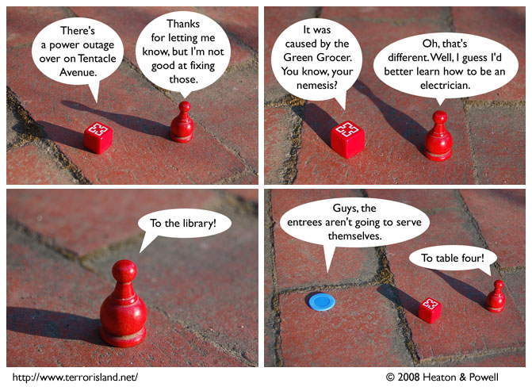

Strip #288
— Monday, April 14, 2008
We work the PSAs into the story. Learning is fun!
Notes, Thoughts, &c.
Ben’s Notes
On the subject of electricity and learning, I heard that it is very easy to learn how to become an electrical engineer. Apparently it’s just some applied physics. If you want a ‘slacker’ degree, I highly recommend studying electrical engineering. If you disagree, please e-mail me and I will argue with you about this.
I wrote Ben’s comments today. -Lewis
Lewis’s Notes
Say what you will about Waiterman. He certainly has a lot of passion for his job(s).